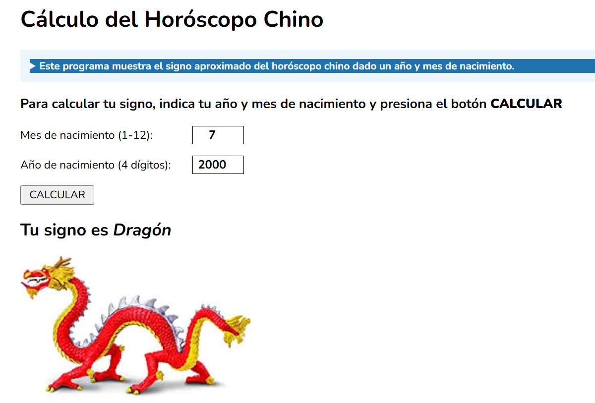

Funciones 🔹 Funciones flecha🔹Escuchadores
Crea un programa que revise los números en un array hasta que encuentre el primer número primo del mismo. Aprovecha la función número primo que has desarrollado en el ejercicio anterior. Pista: hacer con do-while.
El usuario debe introducir un DNI con su letra y el programa debe llamar a una función que revise si la letra es correcta o no. (Cálculo del dígito de control del NIF/NIE (Dividir con %))
Crear un nuevo repositorio y copiar todos los ejercicios condicionales allí (Ejercicios condicionales).
Cambiar todas las funciones tradicionales por funciones flecha.
Usando los archivos de los ejercicios condicionales del ejercicio 8.3, cambiar todas las llamadas funciones por escuchadores de evento.
Crea un programa que muestre el signo aproximado del horóscopo chino dado un año y mes de nacimiento.
Para conocer el signo del horóscopo chino, debemos extraer el residuo de la división del año de nacimiento entre 12.
El residuo, entre 0 y 11, está asociado a un signo según la siguiente tabla:
| Resto | 0 | 1 | 2 | 3 | 4 | 5 | 6 | 7 | 8 | 9 | 10 | 11 |
|---|---|---|---|---|---|---|---|---|---|---|---|---|
| Signo | Mono | Gallo | Perro | Cerdo | Rata | Buey | Tigre | Conejo | Dragón | Serpiente | Caballo | Cabra |
Aplicar todo lo que ya sabéis: validación por formulario, funciones flecha y escuchadores de evento.
El programa deberá indicar el signo chino en letras e imagen. ( Ver captura )
